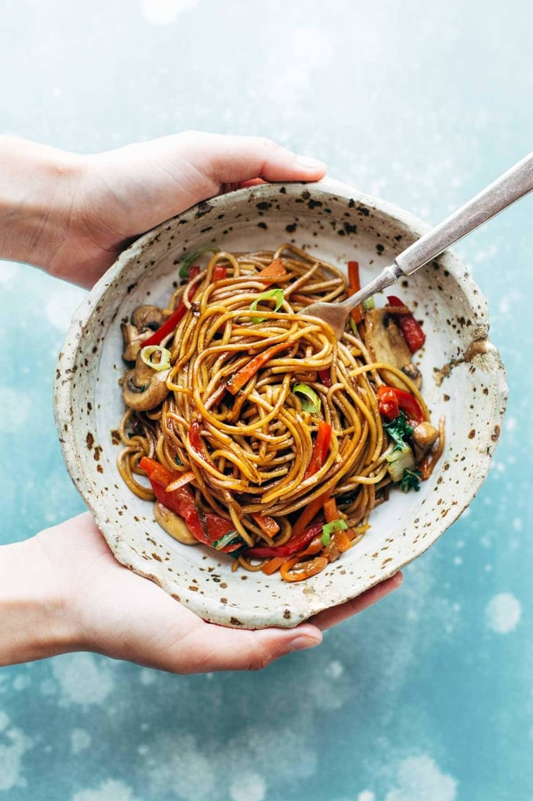

Lo Mein

Description
15 Minute Lo Mein! Made with just soy sauce, sesame oil, a pinch of sugar, ramen noodles or spaghetti noodles, and any veggies or protein you like. SO YUMMY!
Ingredients
Sauce
- 2 tablespoons dark soy sauce (sub regular soy sauce if needed)
- 1 tablespoon light soy sauce (sub regular soy sauce if needed)
- 3 tablespoons oyster sauce
- 1 teaspoon sesame oil
- 1 teaspoon sugar
- 1 clove of garlic, grated (optional)
Lo Mein
- 4-6 ounces uncooked ramen noodles
- 1 tablespoon sesame oil
- 3 green onions, chopped (separate green parts from white parts - you'll use both separately)
- 2-3 cups julienne cut or chopped vegetables like carrots, red peppers, cabbage, bok choy, mushrooms, or broccoli
- 1-2 tablespoons mirin
Steps
- Sauce: Shake all the sauce ingredients together in a jar
- Noodles: Cook the noodles according to package directions. Drain and set aside
- Lo Mein: Heat the sesame oil in a large wok or skillet. Add the green onions (white parts) and vegetables to the hot pan. Stir fry until fork-tender, about 5 minutes. Add the mirin to loosen the browned bits up off the bottom of the pan. Add the cooked noodles and about half of the sauce - toss around in the hot pan to combine. Add more sauce if needed (I usually gauge the amount of sauce I want by the color of the noodles - you want a medium brown color, not too light, not too dark). Serve topped with remaining green onions!
Recipe by https://pinchofyum.com/lo-mein